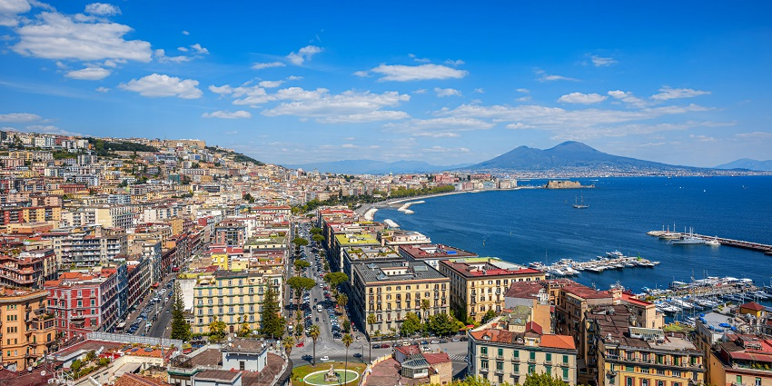

Milan is the capital city of the region of Lombardy in northern
Italy. It is the second largest city by population. It is Italy's
leading financial centre and its most prosperous manufacturing and
commercial city.
Florence is a city rich in cultural heritage, its historic centre
was named a Unesco Site in 1982 and it is known worldwide as a
tourist destination. It is a unique social and urban achievement
which includes the greatest concentration in the world of museums,
churches, buildings and artworks.
Rome is often referred to as the City of Seven Hills due to its
geographic location, and also as the "Eternal City". Rome is
generally considered to be the "cradle of Western civilization and
Christian culture", and the centre of the Catholic Church.

Naples is a city on the sea, a place full of light yet with dark,
hidden foundations. It has a great cultural and artistic identity
which is stamped on the brow of its many museums, castles,
churches, squares, narrow streets and archaeological remains.
Palermo is a city of Southern Italy, the capital of both the
autonomous region of Sicily and the Metropolitan City of Palermo.
The city is noted for its history, culture, architecture and
gastronomy, playing an important role throughout much of its
existence.